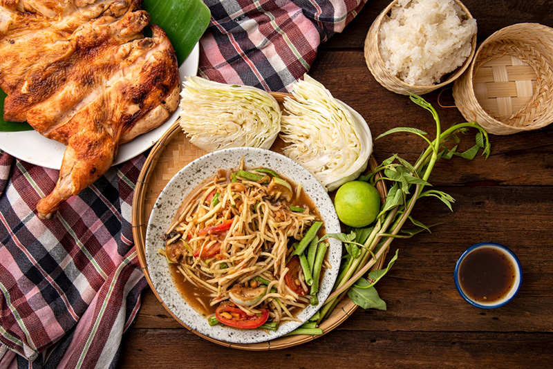

สถานที่ที่ชอบ เกาะสมุย
เกาะสมุย เป็นเกาะที่มีชื่อเสียงโด่งดังไปทั่วโลก ซึ่งนักท่องเที่ยวทั้งชาวไทยและชาวต่างชาติ ก็ต่างขนานนามให้เกาะสมุยว่าเป็น "สวรรค์กลางอ่าวไทย" เนื่องจากเกาะสมุยมีความอุดมสมบูรณ์ไปด้วยทรัพยากรการท่องเที่ยวที่มีความโดดเด่น สวยงาม มีเสน่ห์แตกต่างกันไป ไม่ว่าจะเป็นสถานที่ท่องเที่ยวทางธรรมชาติที่สวยงาม อาทิเช่น น้ำทะเลใสบริสุทธิ์ หาดทรายขาวทอดขนานไปกับทิวต้นมะพร้าวริมชายหาด และนอกจากธรรมชาติชายทะเลแล้ว ยังมีน้ำตกที่มีน้ำใสเย็นเกือบตลอดทั้งปี มีแหล่งท่องเที่ยวที่แสดงถึงศิลปวัฒนธรรมของชาวท้องถิ่น เช่น วัดสำเร็จ วัดละไม วัดพระใหญ่ เจดีย์แหลมสอ ฯลฯ
รูปภาพ
 VIDEO
VIDEO
อาหารที่ชอบ ส้มตำ
วิธีการทำส้มตำ ใส่พริกกับกระเทียมลงในครกตำพอหยาบ จากนั้นฝานมะเขือเทศ มะกอก ตามลงตำให้พอเข้ากัน ปรุงรสด้วยน้ำปลาร้า น้ำปลา น้ำตาลทราย ผงชูรส และมะนาว
จากนั้นใส่เส้นมะละกอสับ ตำเคล้าให้เครื่องปรุงทั้งหมดเข้ากันดี ชิมรสชาติและปรุงเพิ่มได้ตามใจชอบ ตักใส่จานโรยด้วยเมล็ดกระถิน เสิร์ฟคู่กับแคบหมู และผักบุ้ง
รูปภาพ

บุคคลที่ชอบ bruno mars
Bruno Mars (บรูโน มาร์ส) มีชื่อจริงคือ ปีเตอร์ จีน เฮอร์แนนเดซ (Peter Gene Hernandez) เป็นนักร้อง, นักแต่งเพลง, โปรดิวเซอร์, นักพากย์ และนักออกแบบท่าเต้นชาวอเมริกัน เกิดและเติบโตในเมือง โฮโนลูลู รัฐฮาวาย ในครอบครัวของนักดนตรี เริ่มทำเพลงในช่วงวัยเด็กและเริ่มแสดงในสถานที่จัดงานดนตรีต่างๆ ในย่านบ้านเกิดของเขา ซึ่ง Bruno Mars จบการศึกษาในระดับมัธยมศึกษา และหลังจากนั้นก็ได้ย้ายไปยัง Los Angeles เพื่อไล่ตามความฝันในการเป็นนักดนตรี โดย Bruno Mars ได้เป็นโปรดิวเซอร์เพลงให้กับศิลปินหลายคนด้วยกัน และเป็นผู้ก่อตั้ง The Smeezingtons ซึ่งเป็นบริษัทรับเป็นโปรดิวเซอร์และแต่งเนื้อเพลง
รูปภาพ
ผู้จัดทำ
รหัส 664485003
ชื่อ นายกิตดนัย นราแก้ว
หมู่เรียน 66/96